Problem 1
📊 Exploring the Central Limit Theorem through Simulations
🎯 Motivation
The Central Limit Theorem (CLT) is a foundational concept in statistics. It states:
Given a sufficiently large sample size \(n\), the sampling distribution of the sample mean will approximate a normal distribution — even if the underlying population distribution is not normal.
This is essential in:
- Parameter estimation
- Quality control
- Predictive modeling
- Statistical inference
🔢 Simulation Setup
We simulate CLT using three different population distributions:
- Uniform(0, 1) — Flat distribution
- Exponential(λ = 1) — Skewed distribution
- Binomial(n = 10, p = 0.5) — Discrete distribution
For each population:
- Generate \(100,\!000\) values
- Draw \(1,\!000\) random samples for each \(n \in \{5, 10, 30, 50\}\)
- Compute the sample mean
- Plot the distribution of those means
🧪 Python Code Snippet
def simulate_sampling_distribution(population_func, pop_args, sample_sizes, n_samples=1000, pop_size=100000):
population = population_func(*pop_args, size=pop_size)
results = {}
for n in sample_sizes:
sample_means = [
np.mean(np.random.choice(population, size=n, replace=True))
for _ in range(n_samples)
]
results[n] = sample_means
return population, results
📈 Results and Visualization
For each distribution, observe how the histogram of sample means changes as sample size increases.
✅ Even if the population is not normal, the sampling distribution approaches a normal shape as \(n\) increases.
🔍 Parameter Exploration
- Sample size (\(n\)):
- Small \(n\): sample means retain some skew/noise
-
Larger \(n\): bell-shaped normal distribution emerges
-
Population shape:
-
The more skewed the population, the larger \(n\) needed to approximate normality
-
Variance:
- The spread of the sampling distribution decreases as \(n\) increases
- Theoretical variance of sample mean:
$$ \text{Var}(\bar{X}) = \frac{\sigma^2}{n} $$
🌍 Real-World Applications of CLT
- Estimating population means from samples (e.g., average income, political polling)
- Quality control: sample averages are used to monitor manufacturing processes
- Finance: average returns over time modeled as normally distributed
- Medical studies: comparing averages in clinical trials, lab testing
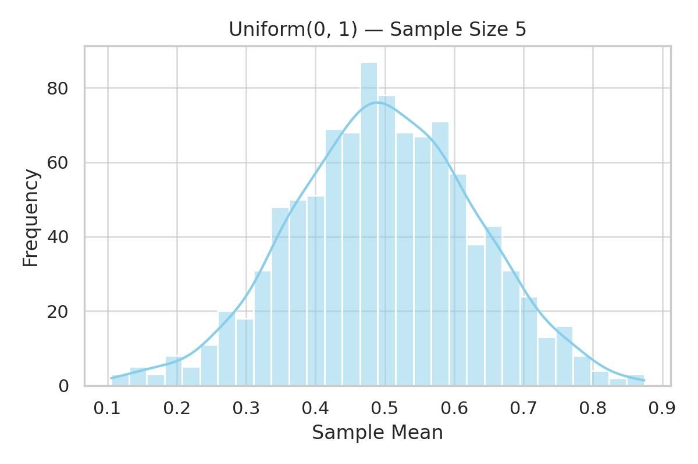
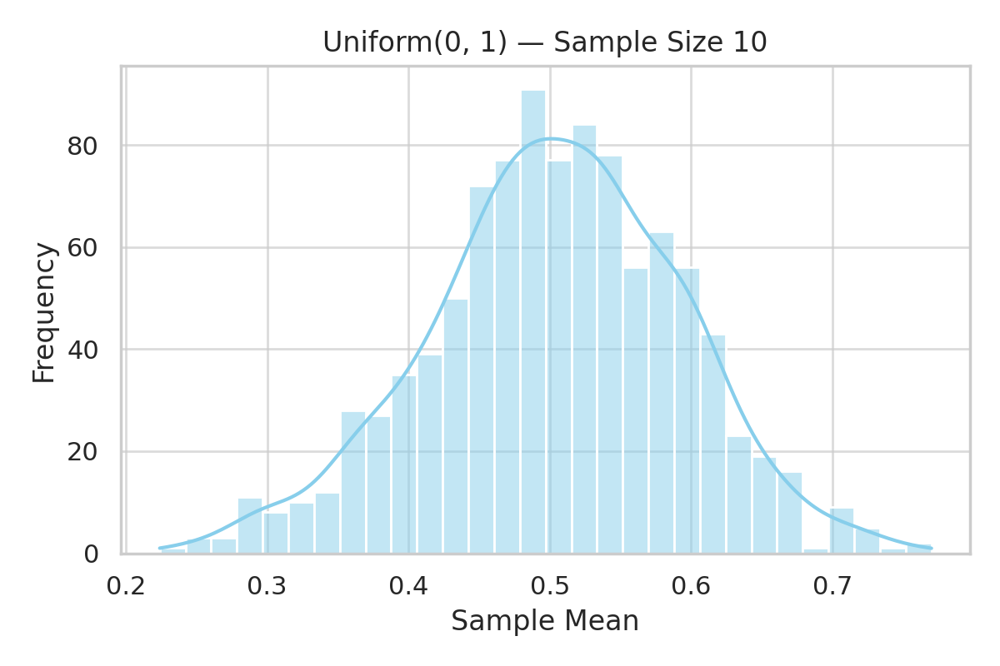
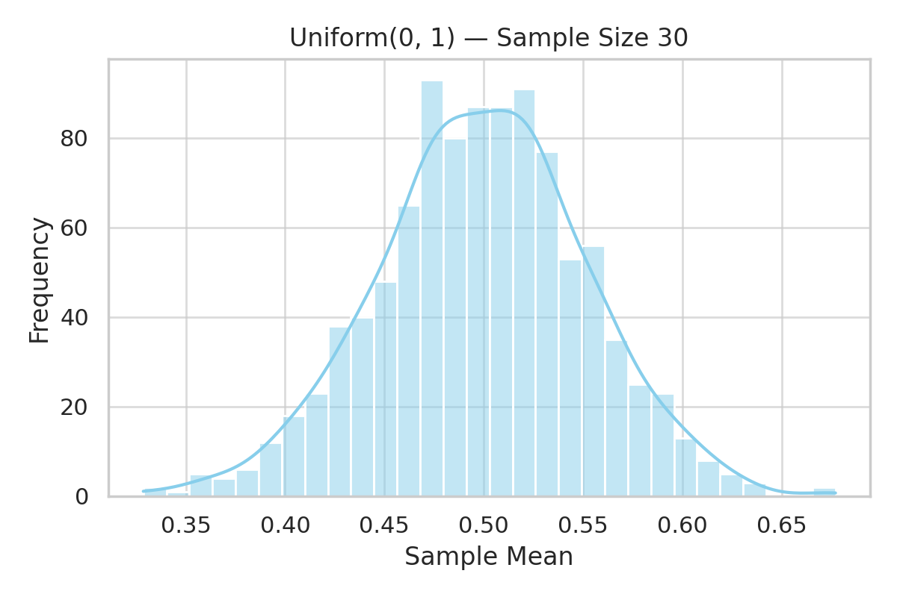

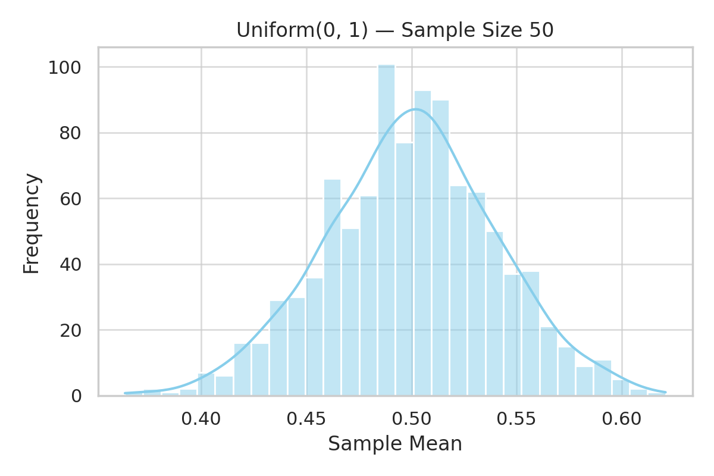
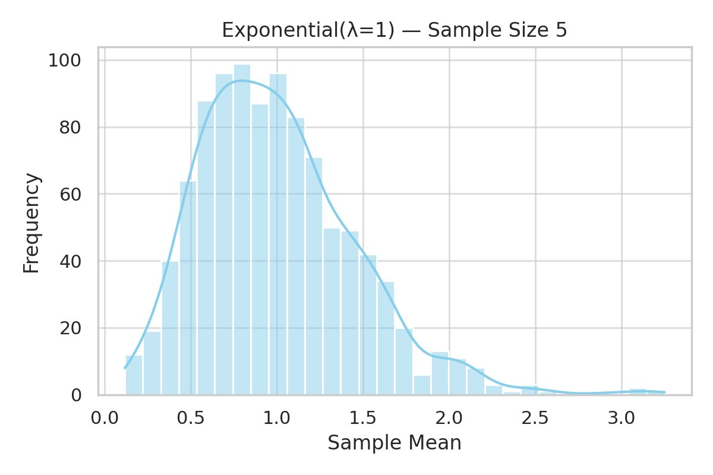
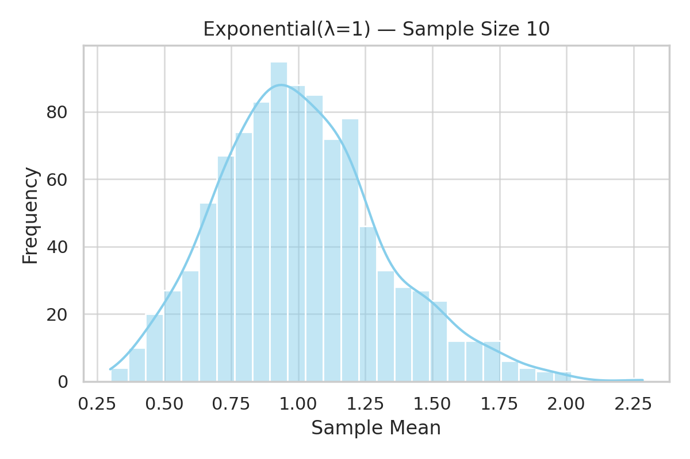
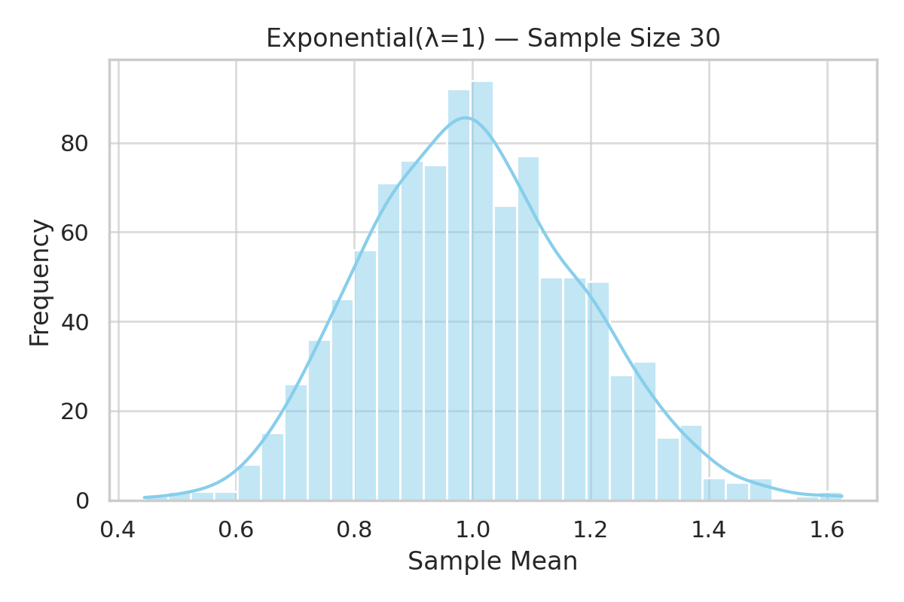
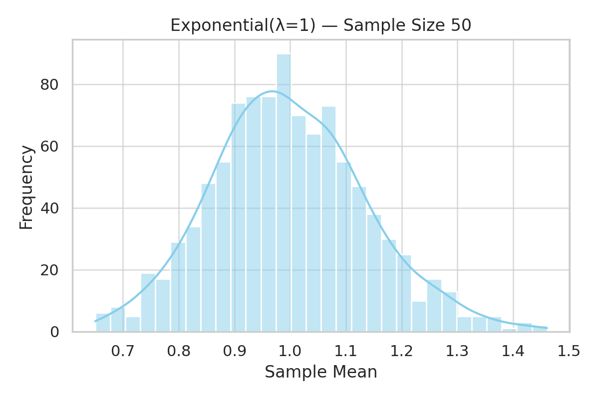
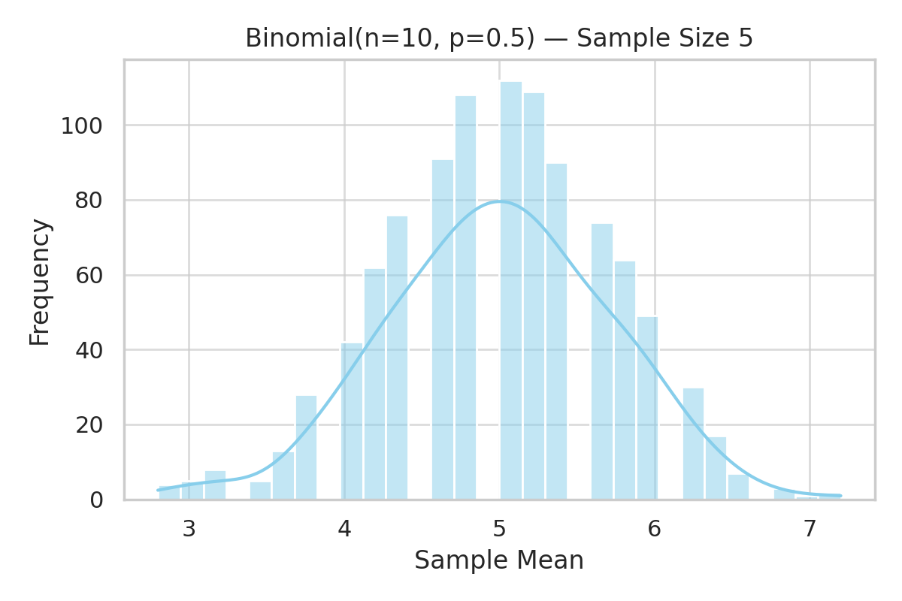
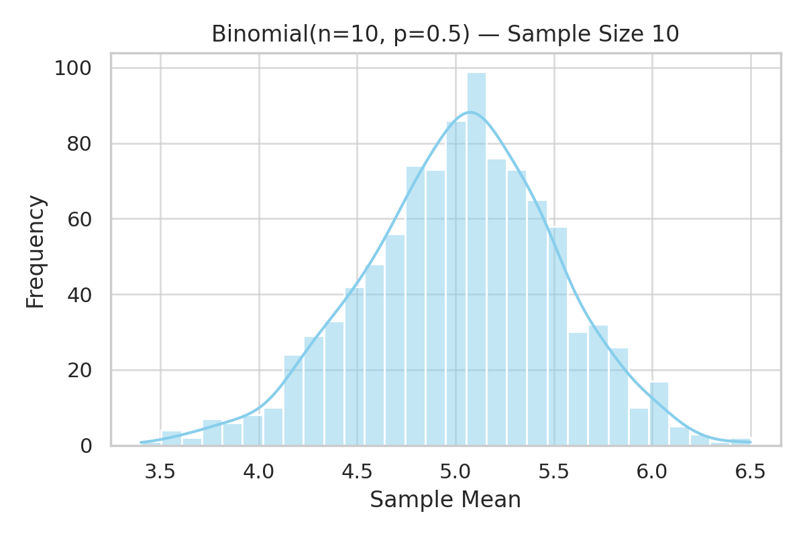
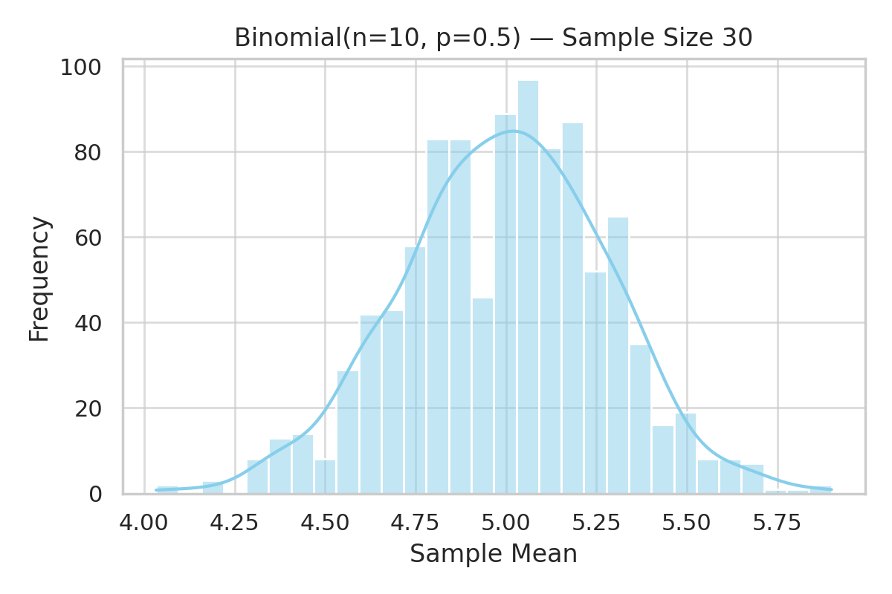
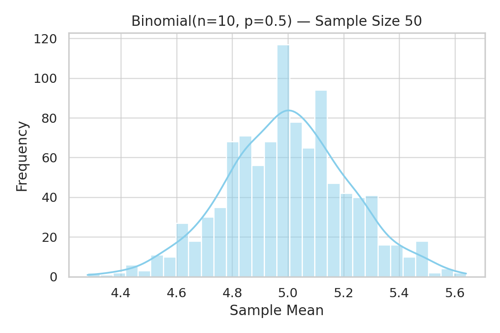
✅ Conclusion
The CLT shows the power of averages — it allows statisticians to make inferences about populations using samples, even when the population distribution is unknown.
Through simulation, we:
- Verified convergence of sample means to a normal distribution
- Illustrated how sample size affects this convergence
- Connected this theory to practical scenarios
📌 Deliverables
- ✅ Simulations for Uniform, Exponential, and Binomial populations
- ✅ Histograms for \(n = 5, 10, 30, 50\)
- ✅ Code and derivations
- ✅ Real-world applications explained